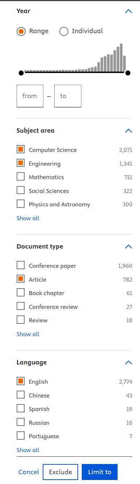

Proceso de búsqueda
- Ingreso a la base de datos scopus
- Se utiliza el ''query string'' para hacer una busqueda avanzada con la siguiente cadena de texto
- Se añaden filtros de búsqueda
- Se aplican los filtros para hacer una búsqueda más precisa



Resumen
El estudio presenta una plataforma de realidad virtual (VR) desarrollada con Unity 3D para mejorar el diseño y revisión colaborativa de vehículos comerciales impulsados por hidrógeno. La VR permite explorar, mover y probar la ubicación de componentes como tanques de hidrógeno, baterías y celdas de combustible en un entorno inmersivo. Las pruebas mostraron que los usuarios lograron mejor comprensión espacial (85%), más rapidez en tareas (40% más rápido que CAD tradicional) y mayor participación (90%). Sin embargo, se detectaron retos como mareos, curva de aprendizaje alta y necesidad de hardware potente.
Palabras clave
- Realidad virtual (VR)
- Unity 3D
- Diseño colaborativo
- Vehículos de hidrógeno
- Tanques de hidrógeno
- Baterías
Conclusiones
En conclusión, la VR ofrece beneficios claros en eficiencia, aprendizaje y colaboración en diseño automotriz, aunque aún requiere mejoras en accesibilidad y rendimiento.
Referencias
- Pagliari, C., Pignatelli, E., & Frizziero, L. (2025). Virtual reality for collaborative design review and learning in hydrogen vehicle architecture. Computer Applications in Engineering Education, 33(3). https://doi.org/10.1002/cae.70015